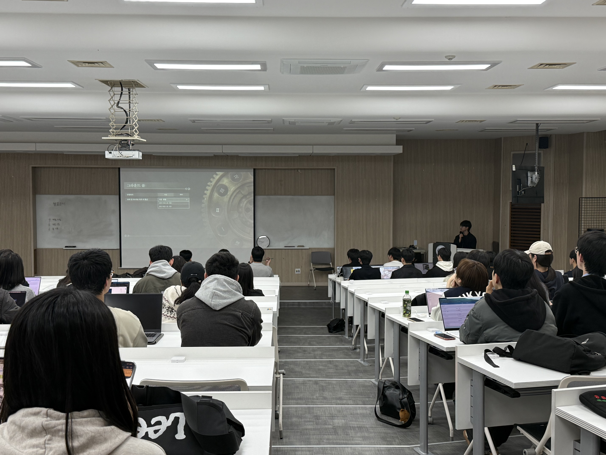
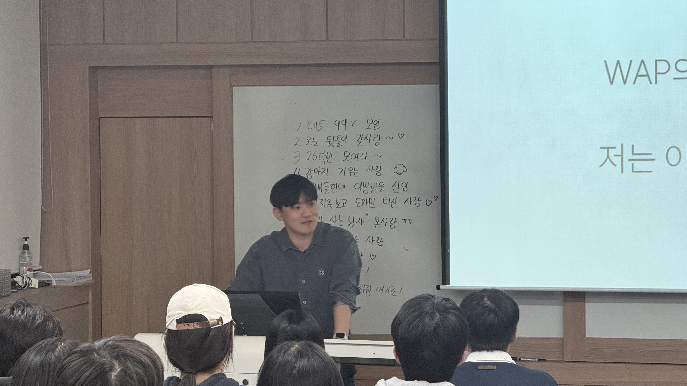
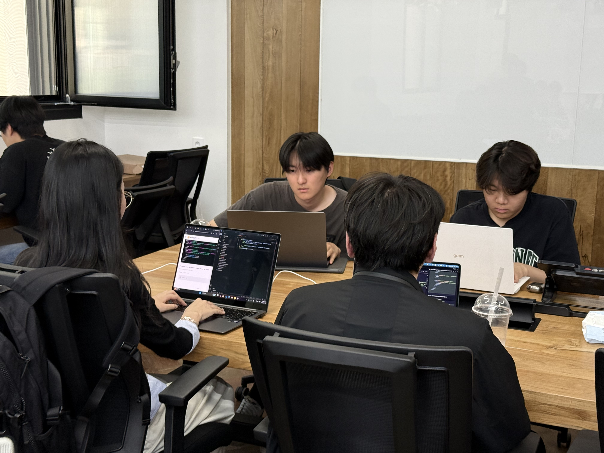
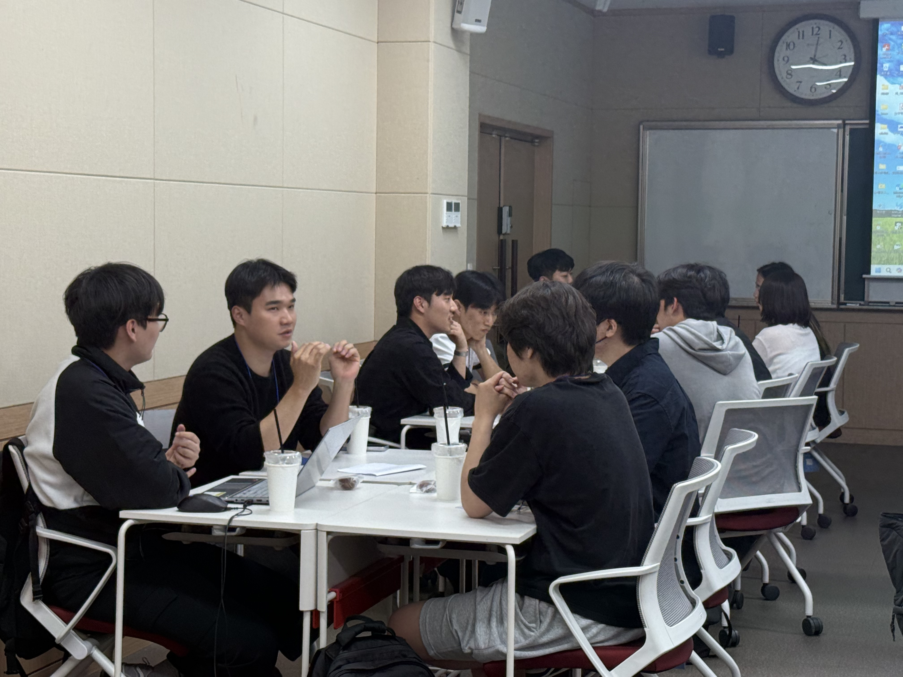
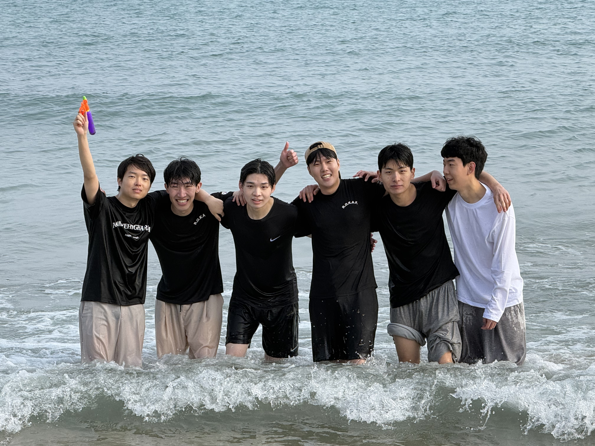
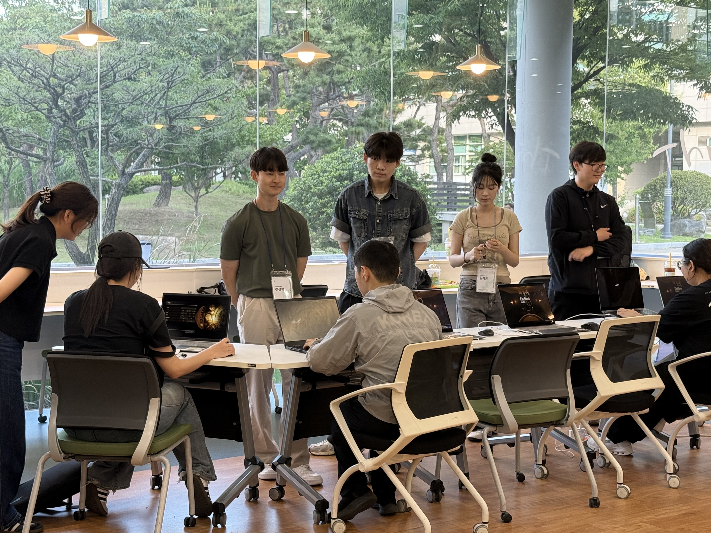

We Are Programmers!
About WAP
- 창립 2000.09.27
- 소속 부경대학교 중앙동아리
- 지도교수 컴퓨터인공지능공학부 오상호 교수님
- 총원 123명
- 업적 우수 동아리 은상 수상(2026.02.19 발표)
WAP의 주요 행사들을 소개합니다

프로젝트의 기획 단계부터 개발 과정, 최종 결과물까지의 전 과정을 발표하며 팀원들과 경험을 공유하고 피드백을 통해 프로젝트를 발전시킵니다.

프로젝트 기획부터 개발 과정까지의 실무 경험과 노하우를 공유하는 세미나입니다. 동아리원들끼리 개발의 기초를 다질 수 있는 기회를 제공합니다.

부스팅데이는 프로젝트를 한 단계 더 발전시키기 위해 팀원들이 하루 동안 함께 모여 개발에 몰입하고, 멘토의 실시간 피드백을 통해 기획과 기술 방향을 점검하는 행사입니다.

홈커밍 데이는 선배님들로부터 업계 이야기와 진로에 대한 실질적인 정보를 얻을 수 있는 자리로, WAP에서 경험할 수 있는 의미 있는 행사 중 하나 입니다.

개(발)모임은 소규모로 진행되는 테크톡 형식의 모임으로, 발표자가 자유롭게 원하는 주제를 준비해 서로의 지식을 나누는 자리입니다.

최종전시회는 한 학기 동안 WAP 동아리원들이 직접 기획하고 개발한 프로젝트를 한자리에서 만나볼 수 있는 행사입니다.
WAP에 대해 더 궁금하다면?